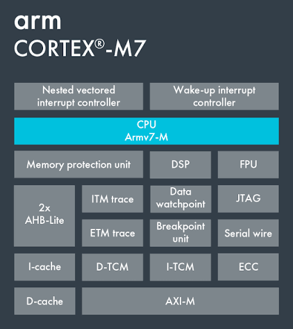

ARM Cortex-M7 Real-Time Kernel
A lightweight preemptive RTOS kernel built on static allocation, with priority scheduling across 32 levels, O(1) ready lists, and dynamic-tick timekeeping.
- Mutexes with transitive priority inheritance, semaphores, queues, notifications, and ISR-safe variants.
- MPU-based stack-overflow guard and optional C++ RAII wrappers.